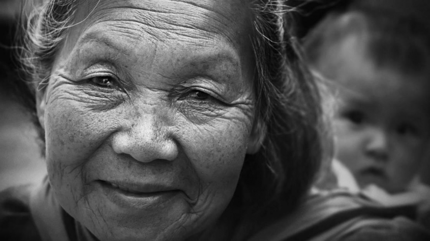
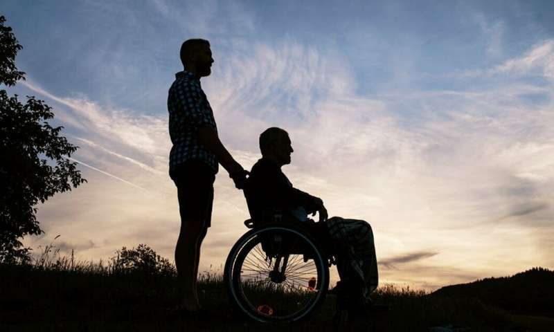
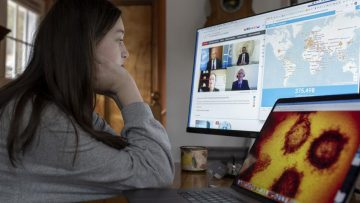
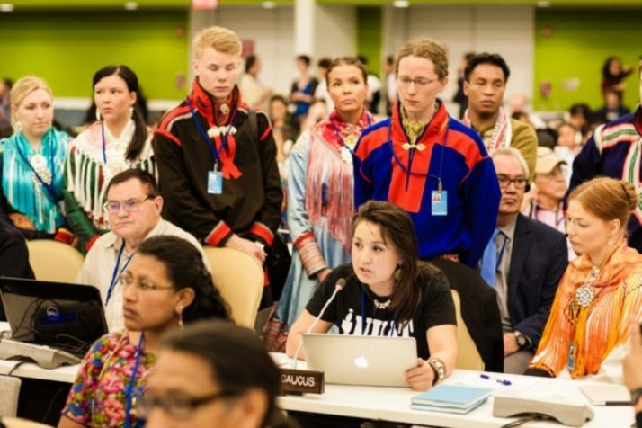

Effect on World

The COVID-19 outbreak affects all segments of the population and is particularly detrimental to members of those social groups in the most vulnerable situations, continues to affect populations, including people living in poverty situations, older persons, persons with disabilities, youth, and indigenous peoples. Early evidence indicates that that the health and economic impacts of the virus are being borne disproportionately by poor people. For example, homeless people, because they may be unable to safely shelter in place, are highly exposed to the danger of the virus. People without access to running water, refugees, migrants, or displaced persons also stand to suffer disproportionately both from the pandemic and its aftermath – whether due to limited movement, fewer employment opportunities, increased xenophobia etc.

Older People
Older persons are particularly susceptible to the risk of infection from COVID-19, especially those with chronic health conditions such as hypertension, cardiovascular disease and diabetes. Older persons are not just struggling with greater health risks but are also likely to be less capable of supporting themselves in isolation. Although social distancing is necessary to reduce the spread of the disease, if not implemented correctly, such measures can also lead to increased social isolation of older persons at a time when they may be at most need of support. The discourse around COVID-19, in which it is perceived as a disease of older people, exacerbates negative stereotypes about older persons who may be viewed as weak, unimportant and a burden on society. Such age-based discrimination may manifest in the provision of services because the treatment of older persons may be perceived to have less value than the treatment of younger generations. International human rights law guarantees everyone the right to the highest attainable standard of health and obligates Governments to take steps to provide medical care to those who need it. Shortages of ventilators, for example, necessitate the adoption of triage policies and protocols based on medical, evidence-based and ethical factors, rather than arbitrary decisions based on age.
People with Disability
Even at the best of times, persons with disabilities face challenges in accessing health-care services, due to lack of availability, accessibility, affordability, as well as stigma and discrimination. The risks of infection from COVID-19 for persons with disabilities are compounded by other issues, which warrant specific action: disruption of services and support, pre-existing health conditions in some cases which leave them more at risk of developing serious illness or dying, being excluded from health information and mainstream health provision, living in a world where accessibility is often limited and where barriers to goods and services are a challenge, and being disproportionately more likely to live in institutional settings. General individual self-care and other preventive measures against the COVID-19 outbreak can entail challenges for persons with disabilities. For instance, some persons with disabilities may have difficulties in implementing measures to keep the virus at bay, including personal hygiene and recommended frequent cleaning of surfaces and homes. Cleaning homes and washing hands frequently can be challenging, due to physical impairments, environmental barriers, or interrupted services. Others may not be able to practice social distancing or cannot isolate themselves as thoroughly as other people, because they require regular help and support from other people for every day self-care tasks.
Youth
Many governments have called on youth to embrace the effort to protect themselves and the overall population. Youth are also in a position to help those who are most vulnerable, and to aid in increasing public health social awareness campaigns among their communities. Thus, youth are critical to limiting the virus’s spread and its impact on public health, society, and the economy at large. In terms of employment, youth are disproportionately unemployed, and those who are employed often work in the informal economy or gig economy, on precarious contracts or in the service sectors of the economy, that are likely to be severely affected by COVID-19. More than one billion youth are now no longer physically in school after the closure of schools and universities across many jurisdictions. The disruption in education and learning could have medium and long-term consequences on the quality of education, though the efforts made by teachers, school administrations, local and national governments to cope with the unprecedented circumstances to the best of their ability should be recognized.
Indigenous peoples are particularly vulnerable at this time due to significantly higher rates of communicable and non-communicable diseases, lack of access to essential services, absence of culturally appropriate healthcare, and if any, under-equipped and under-staffed local medical facilities. The first point of prevention is the dissemination of information in indigenous languages, thus ensuring that services and facilities are appropriate to the specific situation of indigenous peoples, and all are reached. The large number of indigenous peoples who are outside of the social protection system further contributes to vulnerability, particularly if they are dependent on income from the broader economy – produce, tourism, handicrafts and employment in urban areas. In this regard, Governments should ensure that interim financial support measures include indigenous peoples and other vulnerable groups.
| Home | Index |